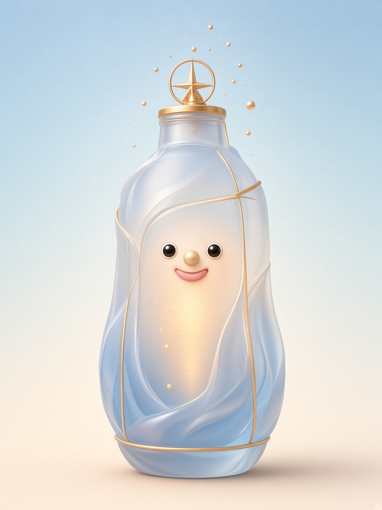
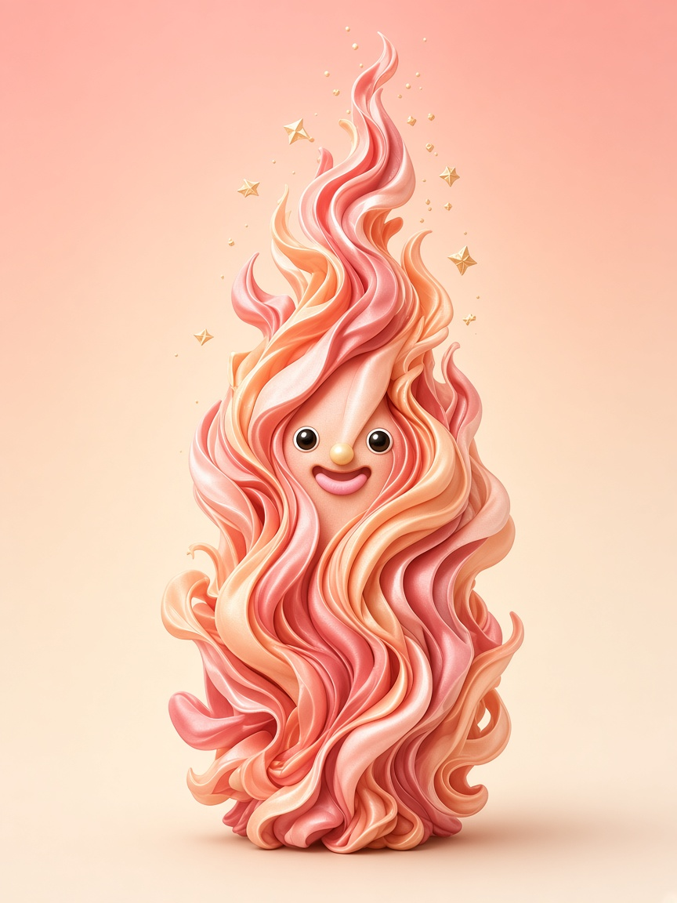
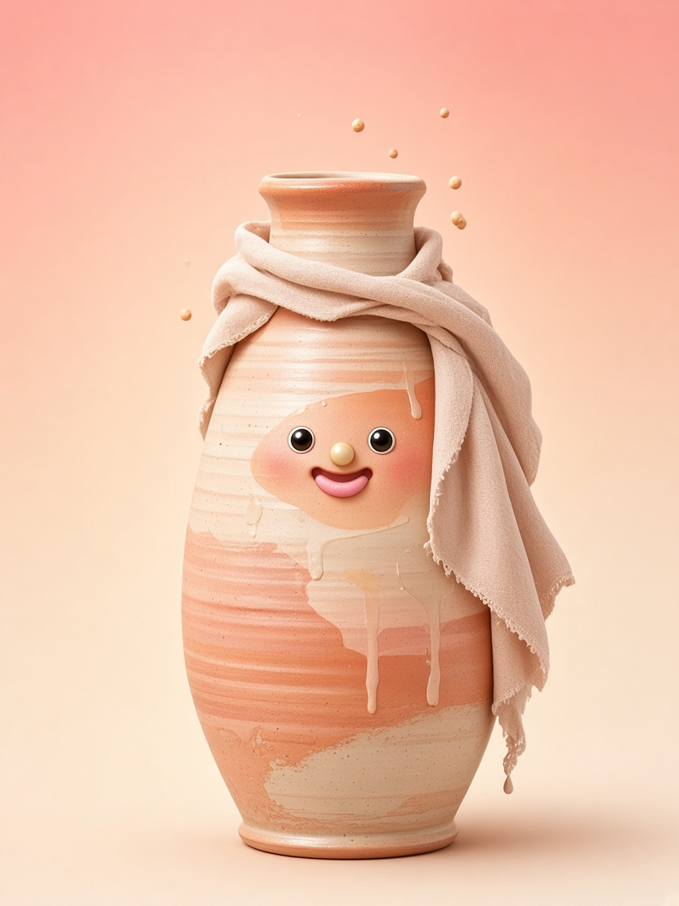
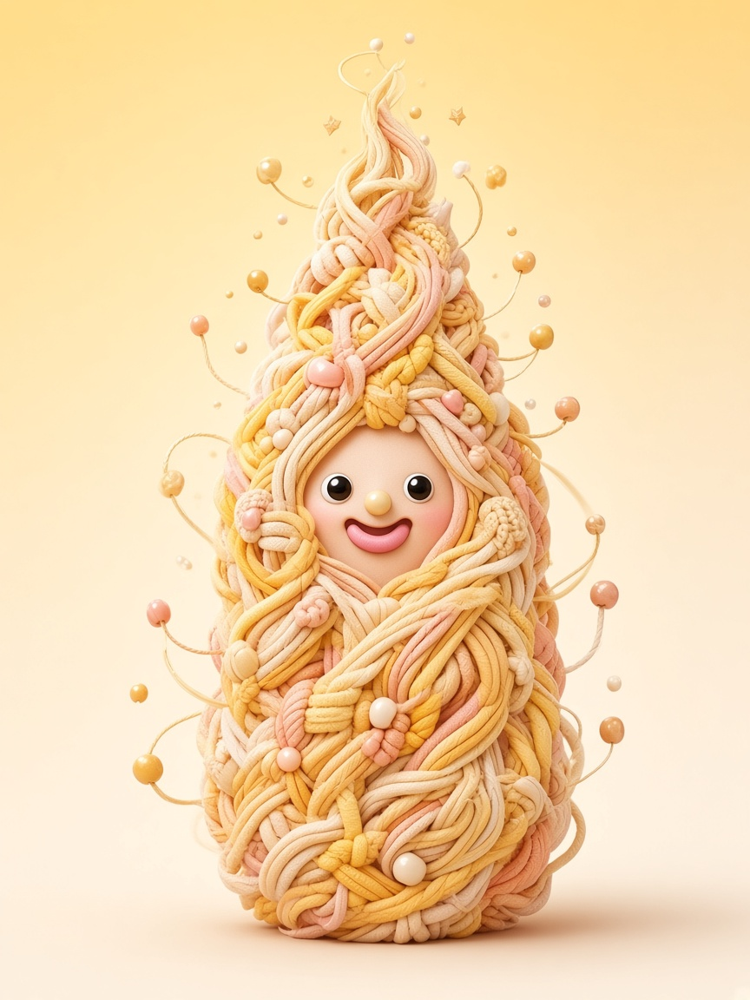
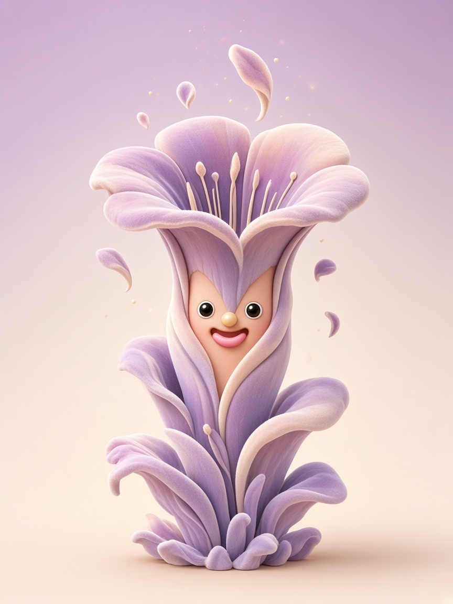
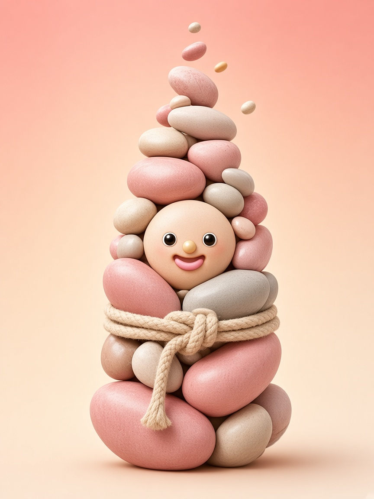
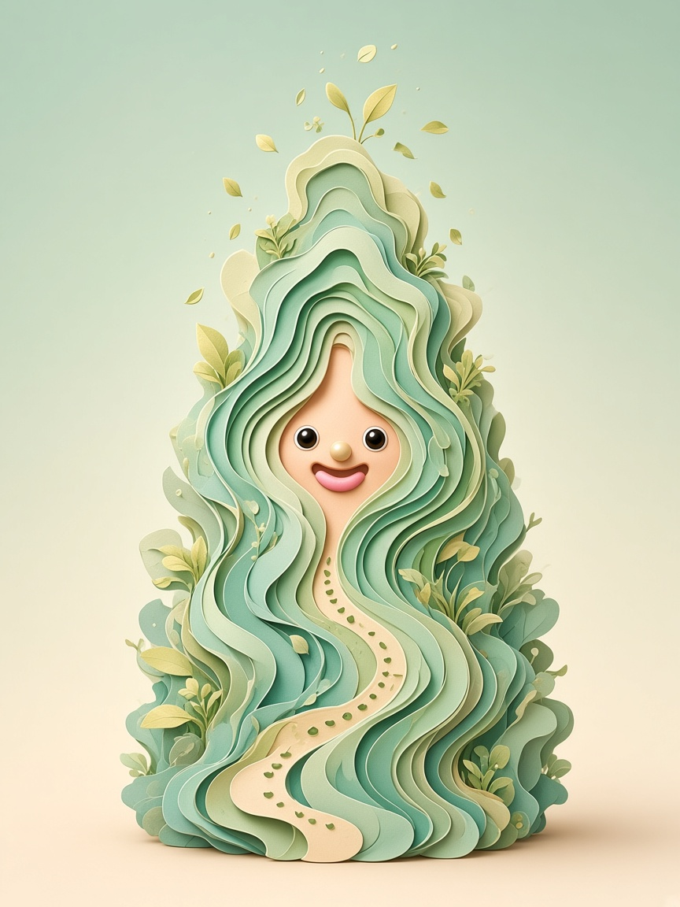

Te compartieron su personaje Moraleja
Ella es
La Brújula
Comunicas con coherencia; tu reto es no exigirte claridad perfecta.
Su voz interna dice“Ya debería poder manejar esto sola.”
¿Te suena familiar? Tienes una relación consciente con tu diálogo interno: reconoces tus creencias, las cuestionas cuando hace falta y comunicas con coherencia.
¿Y tú? Descubre tu personaje
Autodiagnóstico gratuito para emprendedoras · 20 preguntas

Personaje MoralejaHay siete personajes. ¿Cuál habla en ti?
Hacer el test →
La Chispa“Si no lo hago ya, pierdo la oportunidad.”
La Artesana“Todavía no está listo.”
La Conectora“¿Qué van a pensar de mí?”
La Voz Valiosa“Mejor lo explico, para que no piensen que es caro.”
La Capitana“Si no lo hago yo, nadie lo hará bien.”
La Exploradora“Ya sé qué debería hacer… ¿por qué volví a lo mismo?”